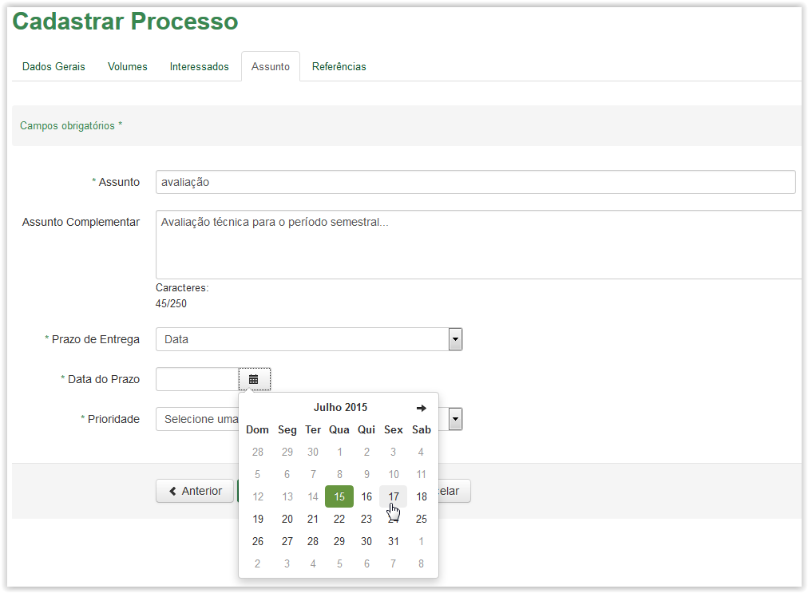
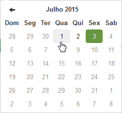

Cadastrar Processo
Após preencher a aba Interessados e clicar no botão Próxima, o sistema apresenta a aba Assunto: Observe que alguns campos são obrigatórios (Veja Nota 1):
Cadastrar Processo - Aba Assunto
Informações para cadastro de processo - Aba Assunto:
Assunto: |
Assunto do processo conforme tabela Conarq. |
Assunto Complementar: |
Resumo do Assunto, tratativa do processo. |
Prazo de Entrega: |
Prazo de entrega do processo. |
Data do Prazo: |
Até quando poderá ser atendido o prazo. |
Dias: |
Se o prazo dado é em dias úteis ou corridos. |
Quantidade de Dias: |
Quantos dias para atendimento do prazo. |
Prioridade: |
Qual a prioridade do documento: alta, média ou baixa. |
Descrição da prioridade: |
Descrição do motivo pelo qual o processo possui prioridade. |
 Preenchendo a aba Assunto do cadastro de processo!!
Preenchendo a aba Assunto do cadastro de processo!!
Selecionando um valor na lista do campo Assunto
Preenchendo o campo Assunto

Selecionando um tipo de prazo no campo Prazo de Entrega
Após selecionar o item Data no campo Prazo de Entrega o sistema apresenta o campo Data do Prazo
Após selecionar o item Dias no campo Prazo de Entrega o sistema apresenta os campos Dias e Qtde Dias

Selecionando a data no calendário para preencher o campo Data do Prazo
Selecionando um valor no campo Dias
Preenchendo o campo Qtde. Dias
Selecionando uma prioridade na lista do campo Prioridade
Selecionando um item na lista do campo Descrição da Prioridade
 para apresentar a próxima aba:
para apresentar a próxima aba:Clicando no botão Próxima após preenchimento da Aba Assunto
IMPORTANTE!!
 Nota 1:
Nota 1:
Os campos obrigatórios são indicados pelo sinal de asterisco (*) na cor verde ao lado do nome. Quando algum ou nenhum campo obrigatório for preenchido, o sistema apresenta uma mensagem de erro: "Campos de preenchimento obrigatório não foram preenchidos.".

Comportamento da tela de Cadastro de Documento - Aba Assunto, após clicar no botão Próxima sem preencher os campos obrigatórios.
 Nota 2:
Nota 2:
Nos campos de Data, ao clicar no ícone  o sistema apresenta um calendário:
o sistema apresenta um calendário:

Calendário
O calendário é exibido apresentando o mês e ano atuais  , além do dia corrente
, além do dia corrente  . Utilize as setinhas
. Utilize as setinhas  para navegar entre os meses (anteriores e posteriores) e clique no dia desejado
para navegar entre os meses (anteriores e posteriores) e clique no dia desejado  para que o campo de data seja preenchido:
para que o campo de data seja preenchido:

Preenchimento do campo de Data
Created with the Personal Edition of HelpNDoc: Free HTML Help documentation generator